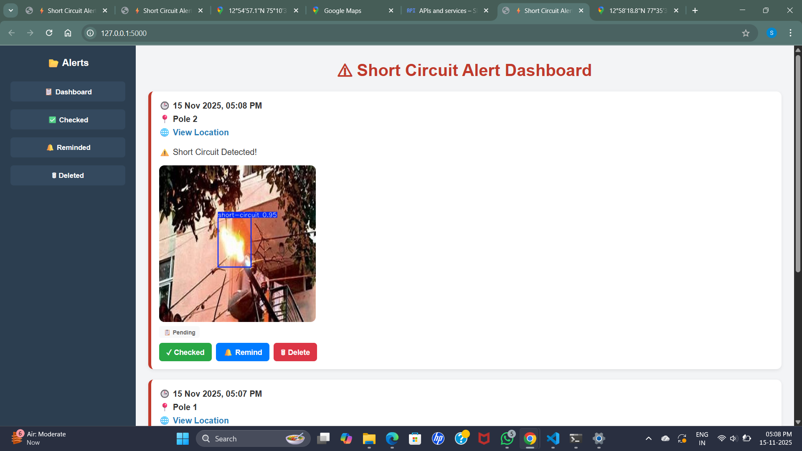
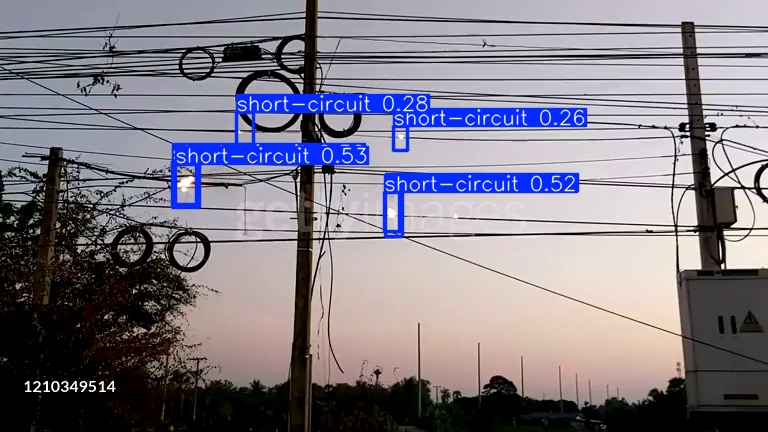
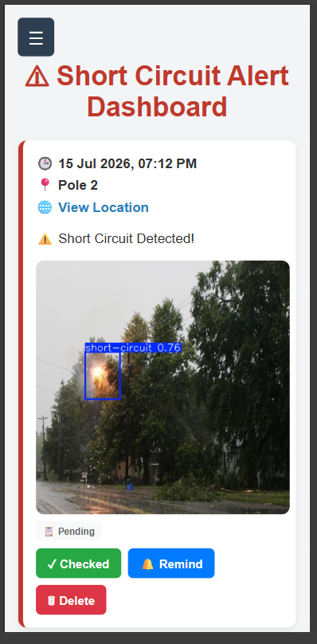
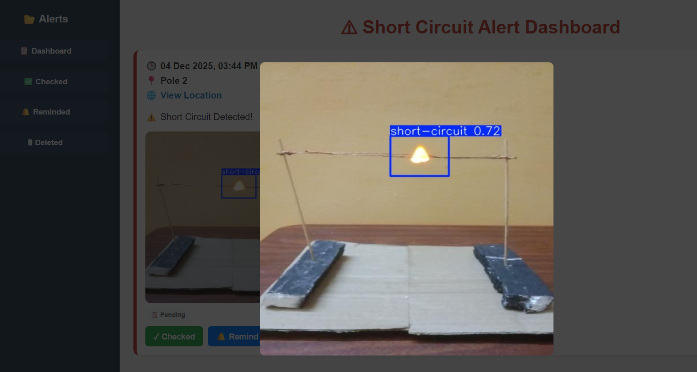
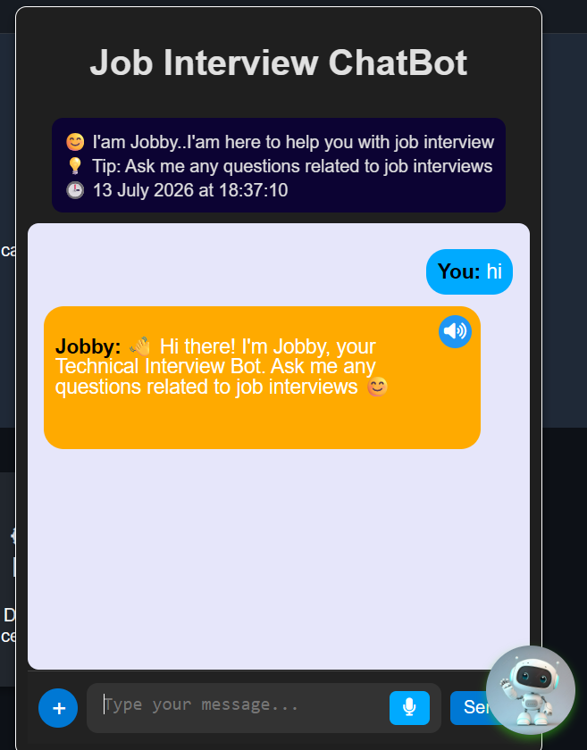
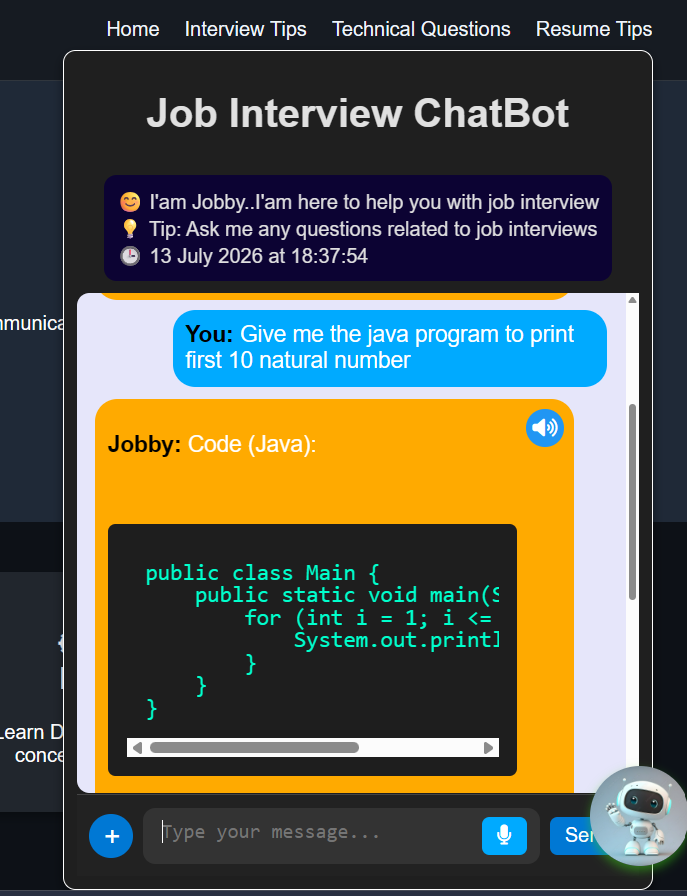
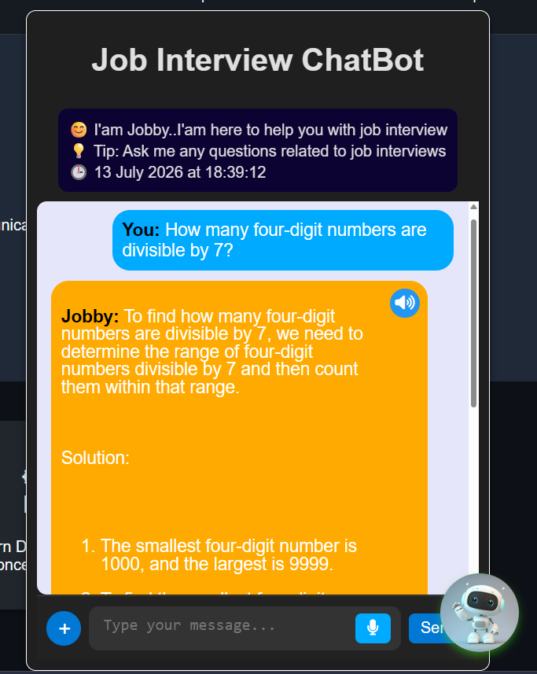
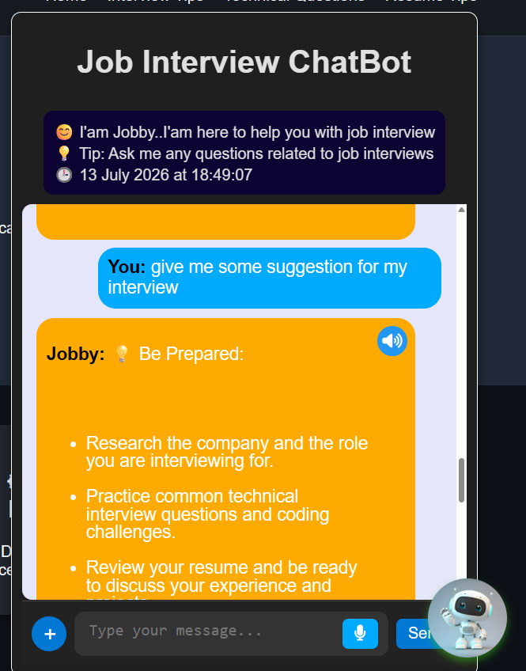
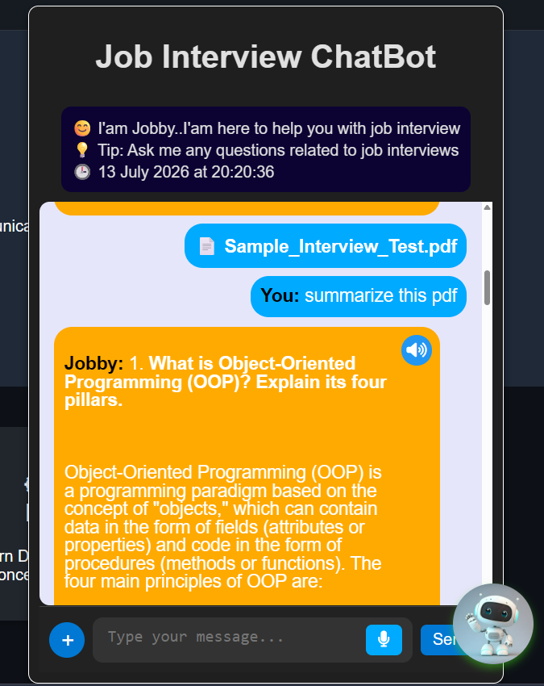
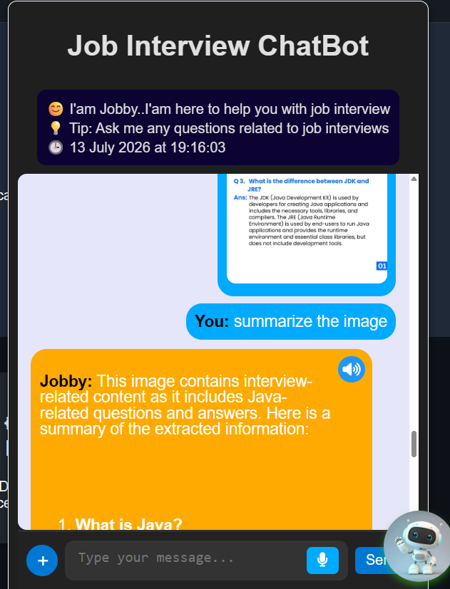

Building Ideas Into Reality
Every project in my portfolio represents a journey of learning, exploration, and continuous growth. Rather than simply completing projects as academic requirements.From Artificial Intelligence and Full-Stack Development to modern Web Technologies, each experience has strengthened my technical skills, creativity, teamwork, and problem-solving abilities. Some projects have earned recognition, while others continue to evolve, but every one has contributed to shaping me into a more confident and passionate Software Developer✨.
🥇 1st Place in the Mini Project Expo.
AI-Based Real-Time Short Circuit Detection System
Electrical short circuits can lead to power outages, equipment damage, and serious safety risks for maintenance personnel. Traditional fault detection requires linemen to manually inspect multiple electrical poles, making the process time-consuming and hazardous. This project automatically detects short-circuit events through real-time video monitoring using Artificial Intelligence and instantly notifies maintenance personnel with the detected fault image and location details via a web-based dashboard. The solution minimizes manual inspection, enables faster fault response, improves operational efficiency, and enhances worker safety.
Programming Languages
Python
HTML
CSS
Javascript
Technologies Used




Jobby – AI Interview Helper Chatbot
Jobby is an AI-powered Technical Interview Chatbot designed to help users prepare for interviews through an intelligent and interactive learning experience. It provides accurate answers to technical interview questions with well-structured explanations and neatly formatted code snippets, making complex concepts easier to understand. The chatbot supports voice input by converting speech into text and can also read responses aloud using text-to-speech for a more natural interaction. Users can upload PDF documents to receive concise summaries, ask questions based on the uploaded content, and quickly extract important information. It also accepts image uploads, analyzes the visual content, and generates meaningful summaries or explanations. To ensure focused and relevant assistance, Jobby is exclusively designed for technical interview preparation, delivering reliable responses tailored to software engineering and programming-related queries.
Programming Languages
Python
HTML
CSS
JavaScript
Technologies Used






Real Estate Management System
The Real Estate Management System is a full-stack web application developed to simplify property management through a secure role-based administration system. The platform enables administrators to efficiently manage properties, property types, amenities, users, roles, and permissions while ensuring secure authentication and access control. The application integrates the OpenWeather API to display real-time weather information based on property locations and supports Excel import/export and PDF generation for efficient data handling. AJAX is used to perform asynchronous CRUD operations, creating a faster and smoother user experience without reloading the entire page. Developed using Laravel's MVC architecture, the project strengthened my knowledge of backend development, database management, REST API integration, authentication, authorization, and modern full-stack web application development.
Programming Languages
PHP
HTML
CSS
JavaScript
Technologies Used


Intelligent Robotic System for Cow Dung Detection and Collection in Cattle Sheds
The Intelligent Robotic System for Cow Dung Detection and Collection in Cattle Sheds is an AI-powered robotic solution developed to automate the detection and collection of cow dung in dairy farms. Using a YOLOv11 object detection model and Computer Vision, the system accurately identifies cow dung from real-time camera input. After detecting the target, the robotic platform autonomously navigates to the detected location, activates the collection mechanism, and transfers the waste into an onboard storage container. Once the collection process is completed, the robot resumes continuous scanning to identify additional waste, enabling efficient cleaning with minimal human intervention. By combining Artificial Intelligence, Robotics, Embedded Systems, and IoT, the project aims to improve cattle shed hygiene, reduce manual labour, and promote sustainable waste management. The collected cow dung can further be utilized for organic manure and biogas production, making the solution environmentally friendly and practical for modern dairy farming.
Programming Languages
Python
Technologies Used